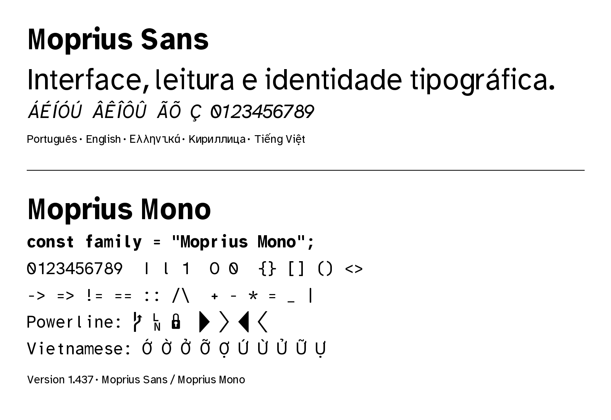
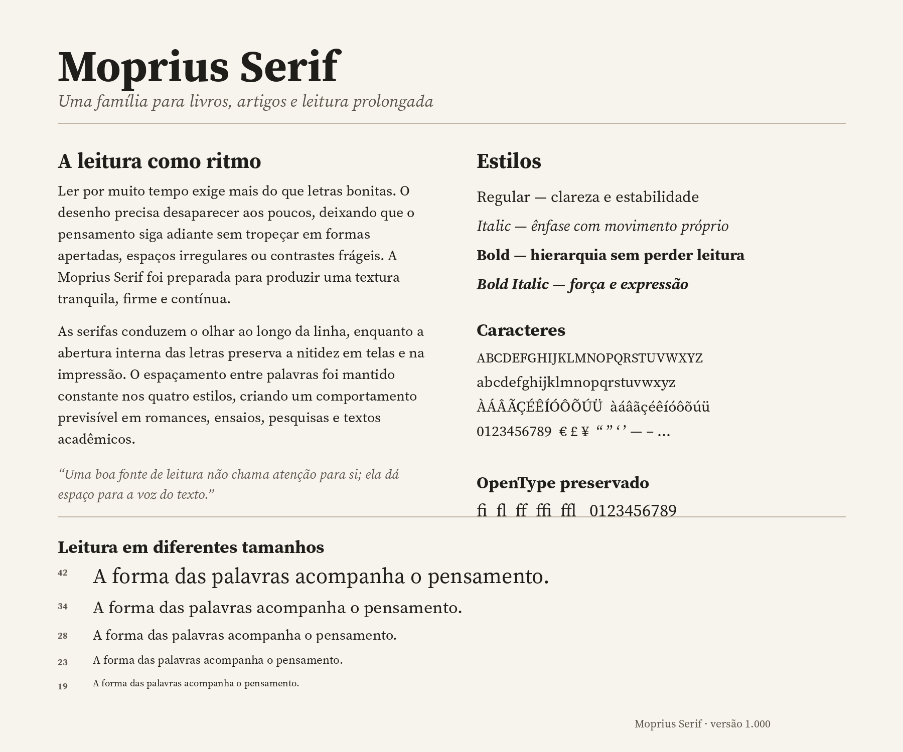

Moprius Sans
A clear voice for interfaces and everyday text.
Regular · Italic · Bold · Bold Italic
Moprius Mono
const family = ["Sans", "Mono", "Serif"];
for (const face of family) {
console.log(`Moprius ${face}`);
}Moprius Serif
Ler um texto longo exige mais do que reconhecer letras. O ritmo entre palavras, a abertura dos caracteres e a estabilidade das linhas precisam trabalhar juntos para que a página desapareça e a ideia permaneça.
A verdadeira elegância de uma fonte de leitura aparece quando ela deixa de disputar atenção com o conteúdo.
Three coordinated families · Twelve styles
ABCDEFGHIJKLMNOPQRSTUVWXYZ
abcdefghijklmnopqrstuvwxyz
0123456789 — “Ação, ciência, órgão, útil.”

